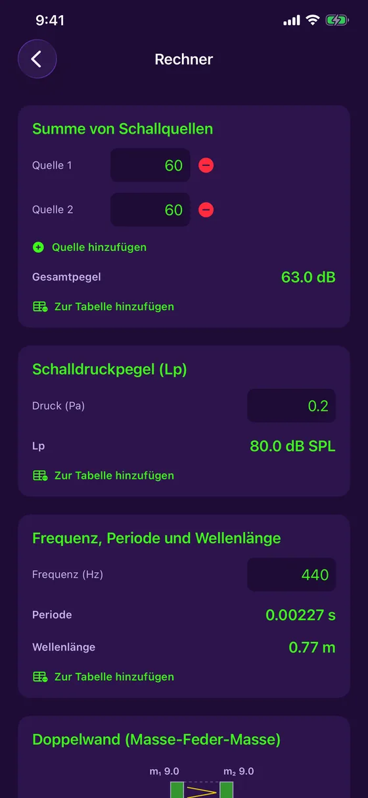

Funktionen
Alles, was Sie zum Messen und Verbessern eines Raums brauchen
Mikrofon und Kamera des iPhone, genutzt zum Messen, Berechnen und Dokumentieren der Akustik eines Ortes — ohne die App zu verlassen, ohne Verbindung.
Messen
Kostenlos: was Sie täglich zum Messen brauchen
Live-Schallpegelmesser
Pegel in dB in Echtzeit, mit Minimum, Mittelwert und Maximum und zwei Diagrammstilen (Festival, Studio).
Mikrofonkalibrierung
Mit einem Referenz-Schallpegelmesser vergleichen und anpassen: Jede Messung zeigt, ob sie kalibriert oder geschätzt ist.
Spektrumanalysator
Live-Frequenzanalyse (FFT) und Klangklassifizierung: Reinton, komplex oder Rauschen.
Reinton
Bei einem Reinton werden Frequenz, Periode und Wellenlänge für Sie berechnet.
Farbiger Verlauf
Jede Sitzung wird mit ihrer Kurve gespeichert: grün, gelb oder rot je nach Pegel.
Messtabelle
Das Protokoll aller Messungen, mit Filter, Sortierung und Export als PDF-Bericht mit Diagrammen.
Im Detail
Jedes Werkzeug aus der Nähe
Stimmgerät
Nach Gehör stimmen oder die Nadel machen lassen.
- Gitarre (5 Stimmungen), Ukulele (auch Low-G und Bariton), Geige, Bratsche, Cello, Mandoline und Banjo
- Chromatischer Modus für die Stimme und jeden beliebigen Ton
- Nadel mit Cent-Anzeige in Echtzeit und eine Feinstimm-Skala von ±10 Cent, mit Vibration, wenn gestimmt ist
- Stabilisierte Anzeige, die vereinzelte Ausreißer ignoriert, mit Pegelanzeige für das Signal
- Referenzton von 430 bis 450 Hz einstellbar, und kostenlos

Schallpegelmesser, Kalibrierung und Verlauf
Der einfachste Schallpegelmesser für unterwegs.
- Live-Pegel, Minimum, Mittelwert und Maximum
- Mikrofonkalibrierung mit einem Referenzgerät, der Kalibrierstatus wird bei jeder Messung vermerkt
- Sitzungsverlauf mit farbiger Kurve
- Bild teilen oder zur Messtabelle hinzufügen

Nachhall pro Frequenz
Wissen, wo der Raum ein Problem hat, nicht nur ob.
- RT60 pro Oktavband, von 125 Hz bis 4 kHz, gegen den Zielwert für Ihren Zweck (Büro, Studio, Besprechungsraum, Heimkino)
- Bänder über dem Zielwert werden markiert, mit einem Tipp für den Bass
- Absorptionskurven für jedes Material im Raum, aus 10 Materialien
- Sabine-Modell und typische Koeffizienten: eine Schätzung als Richtwert

Vom Scan zum Schaumstoff
Den Raum scannen, die App rechnet.
- Am iPhone Pro (LiDAR) füllt ein Rundgang Maße und Fläche jeder Wand aus
- Ohne LiDAR die Maße von Hand eingeben: alles andere funktioniert
- Isometrische 3D-Darstellung des Raums, übernommen in Tabelle und PDF-Bericht
- Wie viel Akustikschaumstoff zum Erreichen des Zielwerts fehlt
- Live-RT60-Messung mit einem kurzen Rauschimpuls

Lärmkarte
Auf einen Blick sehen, wo ein Raum laut ist.
- Den Raumplan antippen und an jeder Stelle fünf Sekunden messen
- Heatmap der ruhigen und lauten Zonen
- Ruhigster Pegel, Mittelwert (Leq) und lautester Pegel
- In der Messtabelle und im PDF-Bericht gespeichert

Akustik-Rechner
Die Formeln des Fachs, ohne Papier und Taschenrechner.
- Summe von Schallquellen: wie viele dB zusammen
- Schalldruckpegel aus dem Druck in Pascal
- Frequenz, Periode und Wellenlänge
- Jedes Ergebnis landet mit einem Tipp in der Tabelle

Doppelwand
Die Dämmung einer Trennwand vor dem Bau abschätzen.
- Masse-Feder-Masse-Berechnung aus der Masse jeder Schale und der Hohlraumtiefe
- Resonanzfrequenz und Dämmung pro Oktavband
- Mit oder ohne Mineralwolle, auf Wunsch mit entkoppelten Schalen
- Richtwert-Schätzung, kein zertifiziertes Rw/STC-Maß

Messtabelle und PDF-Berichte
Alles, was Sie messen, bleibt geordnet und teilbar.
- Jede Messung kommt in eine zentrale Tabelle, nach Typ filterbar
- PDF-Bericht mit Diagrammen und 3D-Darstellung des Raums
- Ein Diagramm in Fotos sichern oder mit den iOS-Funktionen teilen
- Alles bleibt auf Ihrem Gerät: kein Konto, kein Server

Kostenlos oder Acoustic Detector Komplett
| Kostenlos | Komplett | |
|---|---|---|
| Live-Schallpegelmesser und Kalibrierung | ✓ | ✓ |
| Spektrumanalysator | ✓ | ✓ |
| Stimmgerät | ✓ | ✓ |
| Messtabelle und PDF-Export | ✓ | ✓ |
| RT60 des Raums und nötiger Schaumstoff | — | ✓ |
| RT60 pro Oktavband und Absorption | — | ✓ |
| LiDAR-Raumscan | — | ✓ |
| Lärmkarte | — | ✓ |
| Rechner und Doppelwand | — | ✓ |
„Acoustic Detector Komplett“ ist ein einmaliger Kauf für 4,99 $ CA, ohne Abo.
Bereit, Ihren Raum zu hören?
Acoustic Detector ist im App Store für das iPhone erhältlich. Kostenlos, mit einem optionalen Einmalkauf.
Laden im App Store